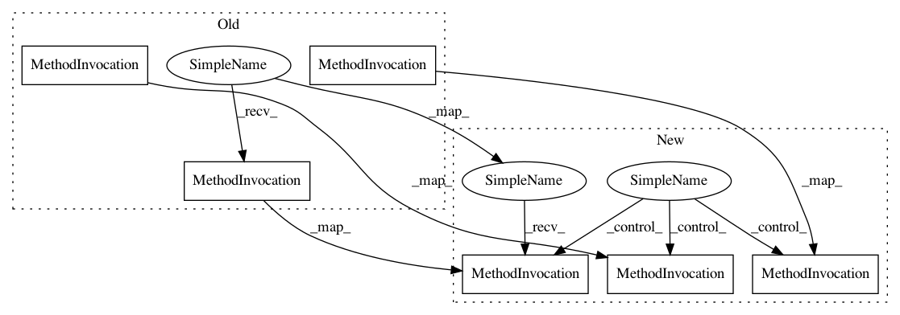

85426e4964fb6ee30ca5b14c5c79f4843e948962,memcnn/models/tests/test_revop.py,,test_revblock_chained,#,133
Before Change
Xin = X.clone()
Y = rb(Xin)
loss = torch.nn.MSELoss()(Y, Ytarget)
optim.zero_grad()
loss.backward()
optim.step()
@pytest.mark.parametrize("coupling", ["additive", "affine"])
def test_revblock_simple_inverse(coupling):
After Change
Xin = X.clone()
Y = rb(Xin)
loss = torch.nn.MSELoss()(Y, Ytarget)
optim.zero_grad()
loss.backward()
optim.step()
assert not torch.isnan(loss)
In pattern: SUPERPATTERN
Frequency: 1
Non-data size: 6
Instances
Project Name: silvandeleemput/memcnn
Commit Name: 85426e4964fb6ee30ca5b14c5c79f4843e948962
Time: 2019-12-12
Author: silvandeleemput@gmail.com
File Name: memcnn/models/tests/test_revop.py
Class Name:
Method Name: test_revblock_chained